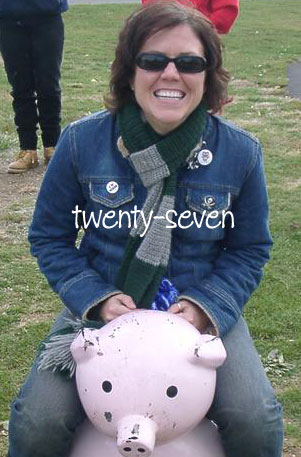

More later, but for now:
2005.10.o7 – Chicago Day 1

2005.10.o8 – Chicago Day 2

I ate a Chicago Hot Dog. My role in this adventure is complete!
Kelly runs tomorrow at 8AM CST. You can track Kelly via email or TXT messaging: Chicago Marathon Runner Tracking. I will be following Kelly via the CTA trains and taking photos — perhaps updating while the race is going on!
¨
Back last Saturday, Kelly ran a triathlon! The E. P. Tom Sawyer Triathlon, which she ran last year in 1:47. It’s an 800 meter swim, a 14 mile bike, and a 5K (3.1 mile) run. This year, we think she did it in 1:35ish – an excellent time!

I took some photos at the Triathlon, but only a few because Kelly was so fast! (PS – the doughnuts were emphasis mine, not Kelly’s). You can see the photos here: 2005.08.06 – Triathlon!

Later on that day, we went to the Louisville Zoo, specifically to see the Lorikeets! On the way, we saw otters (one did ten backflips in a row!), seals, tortoises and penguins – all of which Kelly wanted to keep in our bathtub(s). The Lorikeets were great, though it is clear these birds are heathens compared to those in Cincinatti. Kelly was shat upon and I was bitten, though I gave my nectar to him! Ingrates! We had plans to go to the Street Rod Nationals, but we got up at 5AM, and were bushed by the time we got home. Kelly had an excuse – she ran a triathlon and was awesome. My excuse? None. I took some photos of our zoo trip as well: 2005.08.06 – Zoo!
¨

Dang, so Kelly is “teh olds” today (as she might say). Twenty-seven years and still rockin’. Last night we went to see teh Batmans and then she and I split a sippable sundae at Steak n’ Shake. I had to really brow-beat her to actually eat something she isn’t medically supposed to, but in the end it was all worth it! It was her birthday after all. (The shake/sundae was set down in front of us, and she said “It’s been so long, I don’t know what to do!”, peering over top of the glass and poking at it with the long spoon).
27 years old, and I’ve been lucky to be a part of her life for 1/3rd of that time! I love you, lady!
¨
No, seriously!
Three years ago today, Kelly and I were married! It has been lots of fun and I love her just as much as I did the day I married her — but now the relationship has a desirable, rich patina to it. Perhaps a better metaphor is like a block of cheese — yes, the cheese has more mold on it, but the cheese is now more stinky. “How on earth is that better, Ben?!” Well, as you may know — the stinkier the cheese, the better the flavor.
So there you have it Kelly! I love our stinky relationship.
¨
12 hours and 4 houses later, Kelly and I have returned home exhausted and both sad and happy that Christmas is over for this year. We had a great time at each house and are glad that we got to see everyone. Many presents were exchanged, though the I’m glad to know that we not only gave gifts to the Angel Tree program this year, but also helped out Hunter with his “Books for Caritas Kids” thing at B&N. It feels better to give back to those who have so little, and books are often the perfect gift.
Tomorrow we plan on doing nothing save for meeting the long-lost and far-flung friends at Wick’s Pizza on Baxter.
Merry Christmas all, and to all a good night.
¨


Kelly and I managed to hack our way out of our driveway this afternoon, after sleeping until about noonish. This snow was an interesting one, as the initial layer (5 or 6 inches) were of sleet, the size and granularity of a snow-cone. The last 2 or 3 inches were of powdery regular snow. This combination allowed one to actually walk on the snow without it caving it around your feet, which in itself is pretty cool, but trying to shovel that stuff was a two person job! Kelly would break up the snow with a spade and I would shovel it off the drive. All in all, I estimate we shovelled somewhere in the neighborhood of 250 cubic feet of snow today.
After about 2 hours of that, we retired in-side and promptly took naps. Arising about 5ish, we headed out to get me some new gloves (and to survey the quality of our roads), get a bite to eat and get some cocoa. All were done in a timely fashion, and as you can see in the middle photo above, some folks don’t respect mother nature. Or, perhaps, got real drunk and slid down a 15 foot tall embankment into a drainage ditch. We, however, stayed inside the ruts and managed to get out and back with no troubles.
Now to watch Return of the King and quaff cocoa!
More photos in the 2004.12.22 – Snowstorm gallery.
¨


It is straight-up snowstormin‘ here in Louisville and the 2004.12.22 – Snowstorm gallery is evidence there of.
¨
Kelly and I went up to Dayton on Friday so that Kelly could run the Air Force Marathon Half-Marathon (13.1 miles). The race was on Saturday, and Kelly did really well, completing the race in just under 2 hours — a real improvement over her miniMarathon time of 2 hours 12 minutes (and vastly improved over her 2 hour 45 minute time in the 2003 miniMarathon). The course was very hilly, but Kelly has been training with lots of hills, and really kicked some ass! Me, on the other hand, was around for moral support only. We did, however take in the Air Force Museum after the race, and it too was awesome.
We took many pictures:


View the 2004.09.18 Air Force Marathon gallery.
¨

Kelly ran her first-ever triathlon today. Each year since 1981, the E. P. Tom Sawyer State Park Triathlon has been run (not surprisingly) at lovely E. P. Tom Saywer Park. The first leg is the swim, which was 800 meters. The registration required an estimation of how fast you could swim this to “seed” you and give you a start time. Kelly said “24 minutes”. What she actually did in the pool this morning was something closer to 15 or 16 minutes! Crazy. She was passing people left and right.
After the swim is a 14 mile bike ride, and Kelly’s toughest leg, at least she thought it would be. Turns out she was wrong on that, too! She finished that in just about an hour, with no mishaps, spills, or terrible accidents causing her feet to be permanently trapped in her toe-clips.
The final leg was a 5k (3.1 mile) run, which she completed smiling and “feeling great”. Total time: 1 hour 50 minutes. Not bad for her first ever! She’s hyped for future triathlons. “I wish I would have started this stuff sooner,” she says.
Needless to say, I’m terribly proud of my lil’ Kelly. Despite all her fears, she really kicked ass out there today. If you’d like to see pictures, I suggest you check the 2004.08.07 – Triathlon gallery.
¨


For Kelly’s birthday she wanted only one thing — to go to the Newport Aquarium and see the otters. And to go to the Gap Discount outlet on the way. Oh, and she wanted some shoes. Oh, and some new running shoes. But mainly, really, just the otters. So, last weekend (Saturday June 26th), we headed up I-71 to beautiful Newport, Kentucky.
I must say the aquarium was quite awesome. Well designed and with some really great attractions. The centerpiece being the HUGE saltwater tank in the center of the circular aquarium. There are tunnels that zig-zag through the aquarium, providing you with 270 degree views at times. Really quite amazing. The otters were, in fact, just like wet kitties and just as playful and cute (and apparently do eat cat food). Right behind the otters were the lorikeets, which are (near as I can tell) somewhere in between a parrot and parakeet. Smaller than a parrot, but just as colorful. They are in an open-air exhibit in which you can feed them with little cups of nectar as they sit on your finger. Awesome! (You might also be pooped on). Otters and birdies are fine, but my personal favorite HAD to be the Gentoo penguins in their really awesome penguin tank! Those little buddies are fast!
Kelly bought a little beany otter and I got a little plushie Gentoo penguin. Oh — and I took plenty of pictures which you can view in the Newport Aquarium gallery.
¨